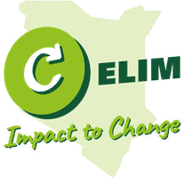
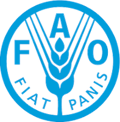
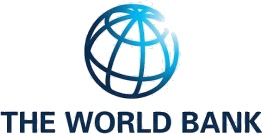
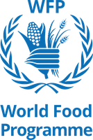
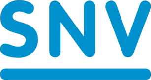
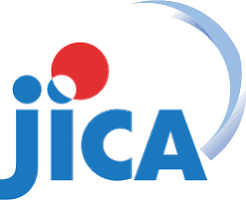

Through ASDARIA
Coffee processing and water re-circulation
Eco-friendly coffee processing machinery and improved water re-circulation for four coffee factories in Embu and Kiambu.
Engineering & agribusiness consultancy, Kenya
Technical design, commercial analysis and applied research for agricultural, food-processing, water and energy systems.

Through ASDARIA

Directors' experience





What we do
ASDARIA brings engineering and business thinking together, from the first investment question to the systems and skills needed to operate.
Feasibility studies, business development support, financial analysis and business planning for agricultural investments.
Design and installation of production, processing and energy systems, with technology support, tender documents and construction supervision.
Value chain and post-harvest studies, baselines, monitoring and evaluation, capacity strengthening and policy review.
Selected experience
Through ASDARIA
Eco-friendly coffee processing machinery and improved water re-circulation for four coffee factories in Embu and Kiambu.

Directors' experience
Design and construction supervision of a food-processing hub for the Kalobeyei community in Turkana.
Directors' experience
Assessed the potential for AFPQ to cooperate with larger companies across Africa, identifying anchor companies and SMEs that could work together to improve product quality from supplier to buyer.
Why ASDARIA


Led by Eng. Samuel Njuguna Ndirangu, Executive Director, and Grace Muthoni Mwangi, Non-Executive Director.
Meet the directorsTechnical layouts and equipment choices connected to a viable business case.
The directors' research with universities and research institutions spans solar drying, renewable energy and value chain upgrading.
The directors' assignments span Kenyan counties and countries across sub-Saharan Africa, from post-harvest baselines to processing facilities.